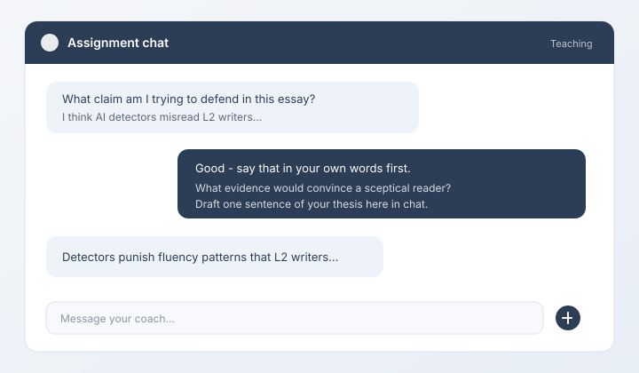
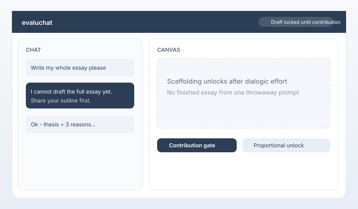
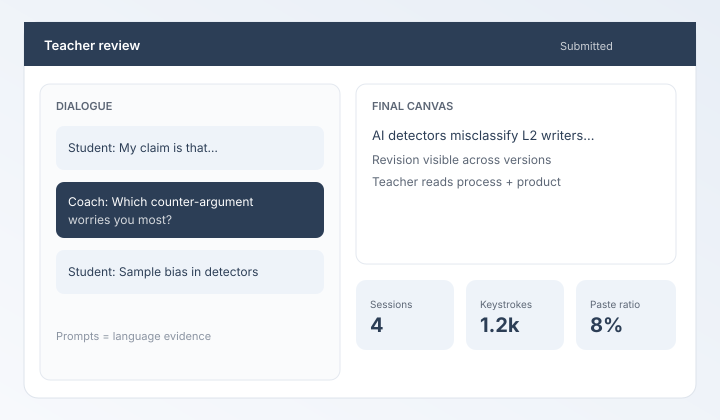

Core principle
Commercial AI UX — with productive constraint
For complex, novel work, a one-sentence prompt rarely produces a good result. The end product is proportional to the care and clarity of the prompting. That dialogic craft is exactly where language learning happens.
Chat the way they already do
Students engage a conversational LLM the way they would with consumer tools — brainstorming, refining ideas, negotiating wording — not a locked-down exam browser.

Constraint forces contribution
The model cannot dump a finished essay from one throwaway request. Students must put ideas into language first; scaffolding unlocks only when dialogic effort is there.

Teachers see the prompts
The dialogue is assessable evidence of language development — not only a polished final canvas with no way to tell what the student actually wrote or thought.

Guides
Start where you are
For teachers
Assign work, read the prompting dialogue, review the canvas, and evaluate language growth — not just a finished AI product.
Open teacher guideFor students
Use AI the way you’re used to — chat, draft, revise — knowing better prompts produce better writing, and that your teacher can see how you got there.
Open student guideFor researchers
Read the CAMDLE conceptual framework and research agenda, including its evidence boundaries, open hypotheses, and proposed study designs. A print-ready PDF is available for academically minded teachers and partners.
Read the research agenda · Download PDFWhy this exists
AI in the classroom without surrendering student agency
Develop agency. Don’t subvert it.
If the goal is to keep AI out of writing, tools like Google Docs revision history already help teachers see how a text evolved. That is fine for a no-AI classroom.
evaluchat is for the opposite choice: put AI in the writing process in a way that still demands student thinking. Immediate feedback in dialogue trains clearer language; teachers evaluate the prompts and negotiation, not only the final essay.
Motivationally, students stay in a workflow that feels like the modern tools they already know — not an archaic process that asks them to pretend generative AI does not exist.
“The quality of the writing tracks the quality of the prompting.”
— evaluchat product principle
Also true
Process evidence — not an AI detector
Alongside the dialogue, teachers get engagement signals (typing, paste patterns, session pacing). These support judgment. They are not cheating verdicts or authorship scores.
Pricing
Free to start. Premium when you need it.
Early-access teachers get a free budget tier (capped) with no credit burn. When you want higher-capability routing, create a premium assignment and buy self-serve Entry credits — about US$5 for 50 credits via Creem (Merchant of Record). Details: Terms.
- Free — budget AI models; up to 5 open assignments and ≤100 students each; closing an assignment frees a slot; $0
- Premium — 1 credit per student when you assign them (not on submit); Entry pack ~50 premium seats
- No subscription required for self-serve Entry
- Light IT: modern browser, ~5 Mbps per student
- Access is invite / early-request gated — start at evaluchat.com
FAQ
Common questions
What is evaluchat?
A browser-based writing platform where students use an AI chat interface much like commercial tools (ChatGPT, Claude, Gemini), while drafting on a canvas — but the model is constrained so it cannot generate the whole assignment from a single prompt. Teachers review the dialogue and the final work.
How is this different from ChatGPT?
The interaction pattern is deliberately familiar. The difference is structural: evaluchat’s model is restricted from producing a complete assignment on demand. Students must contribute ideas and language in dialogue before substantial drafting help unlocks. That friction is the pedagogy.
Why care about the prompts, not just the essay?
For novel, complex tasks, output quality follows prompting quality. Working in dialogue with immediate feedback trains clearer thinking and writing. When teachers can read the actual prompts, they can assess language development — not only a finished text that might have been generated elsewhere with no student voice visible.
Isn’t Google Docs revision history enough?
Revision history is a solid answer when the classroom goal is to avoid AI. evaluchat assumes AI will be used, and designs a constrained, auditable way to use it that develops student agency instead of replacing it.
Is evaluchat an AI detector?
No. We do not flag students as “cheating.” Process signals and the chat transcript are context for teacher judgment — pedagogical transparency, not surveillance theater.
Who can see student writing and dialogue?
Students see their own work. Teachers see submissions for their classes. Authentication is handled by Supabase over HTTPS. Evaluchat does not train its own models on customer content. Default budget AI providers may use inputs/outputs to improve their services under their terms — see Privacy and Terms.
How much does it cost?
Free budget tier (early access): up to 5 open assignments and ≤100 students each, on budget AI models, with no credit burn. Closing an assignment frees a free slot. Premium uses Entry credits (~US$5 for 50): 1 credit per student when you assign them to a premium assignment (not when they submit). Buy credits in the teacher workspace after signing in at evaluchat.com. Larger packs and institutional invoices come later — email hello@evaluchat.com if you need volume discussion.
How do we get started?
Request early access / sign in at evaluchat.com. Create a class, invite students, and run free budget assignments within the published caps. Buy Entry credits when you create premium assignments. Questions: hello@evaluchat.com.